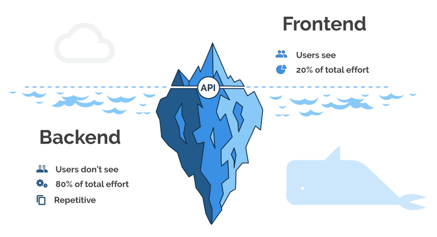
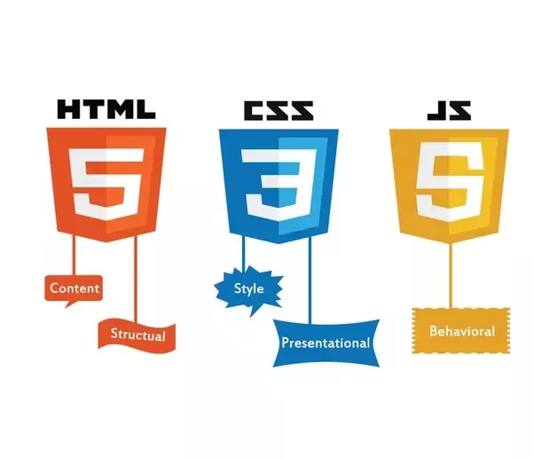

BackEnd vs FrontEnd: What is the diferrence?
Websites consist of two parts: the frontend, which users experience, and the backend, which comprises the invisible structure making the frontend possible.
The difference between frontend and backend development can seem confusing, given their similarties in making websites function properly

Frontend developers design the visual aspects of websites for userts to interact with, including colors, layout, and fonts.
Backend developers create the invisible structure that helps websites function properly. Backend developers have a different technical skillset and make higher salaries than frontend developers.
FrontEnd
FrontEnd developers focuses on the user-facing side of a website. These developers unsure that visitor can easily interact with and navigate sites by using programmung lenguages , design shills, an other tools.
They produce the drop-down menus, layouts, and designs for websites.

Languages use by frontend devs 😁
-
JavaScript
JavaScript creates advanced interactive features.
-
HyperText Markup Language (HTML)
HTML lays out the site's content and structure.
-
Cascading Style Sheets (CSS)
CSS adds design features.
Frameworks and libraries use by frontend devs 😁
Bootstrap
jQuery
React
AngularJS
Vue.JS
BackEnd
Backend developers focus on the server side of websites. They use technical skills to perform the bihind-the-scenes work that creat4es a website's structure and overall funcionality, allowing a site's frontend to exist.
These professionals create a site's operations, database, and application programming interface (API)

Languages use by backend devs 😁
Frameworks and libraries use by backend devs 😁
- ASP. NET
- Ruby on Rails
- Django
- Spring
- Flask